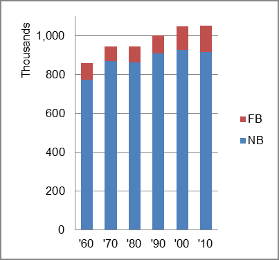

The foreign-born (FB) population increased from 85,974 in 1960 to 134,335 in 2010. That was an increase of 56.3 percent. The foreign-born share increased from 10.0 percent to 12.8 percent.
The share of the overall population that was native-born (NB) increased by 18.7 percent.
Rhode Island: Population 1960-2010 
The first chart below shows the three population change factors for three periods adjusted for annual average amounts. Domestic migration (NDM) was consistently negative and the principal factor adding population changed from B-D in the first period to NIM in the latest two periods.
The second chart shows the same data but with an adjustment to reflect births to immigrants shifted to NIM. In it, NIM became the largest factor in adding population in all three periods, and became the sole factor adding population in the most recent period.
Rhode Island: Sources of Population Change 1990-2013 Rhode Island: Sources of Population Change (Adjusted) 1990-2013
B-D NDM NIM B-D NDM NIM 90-'99 68.7% neg. 31.3% 90-'99 30.7% neg. 68.3% 00-'09 46.2% neg. 53.8% 00-'09 13.1% neg. 86.9% 10-'13 29.0% neg. 71.0% 10-'13 neg. neg. all